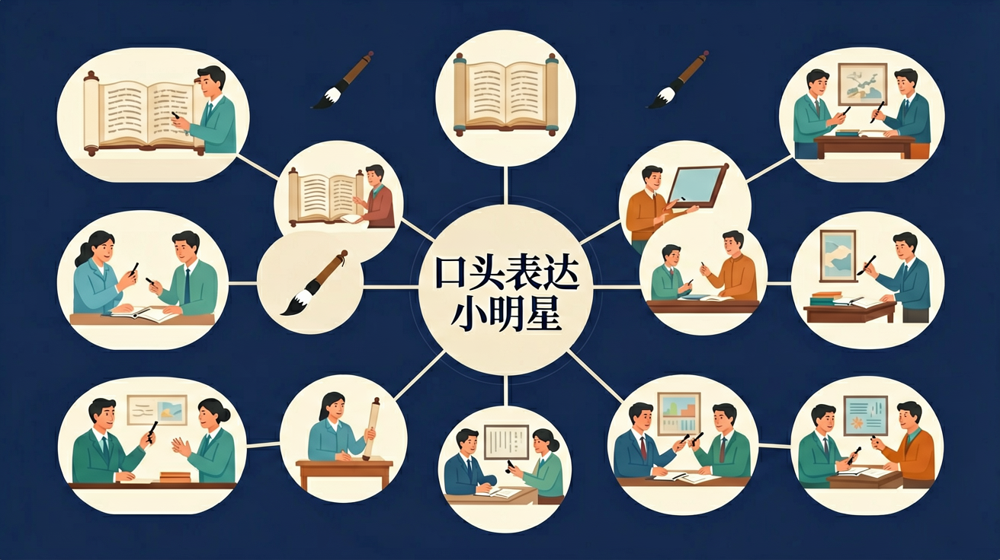

🤖 AI 多模态互动区
把你的问题告诉 AI，或上传图片让 AI 帮你分析
请输入一个话题，AI将帮你规划「总-分-总」的口头表达框架并给出开头示范
点击复制此提示词 →
📎
点击或拖拽图片到这里
三年级语文 · 说出精彩，展现自己

成为一个能说会道的小明星！
选一个话题，想想你能说什么
关于你选的话题，在下面列出3个要点：
掌握好的口头表达的关键要素
给你的演讲搭建框架
题目：介绍一个你认识的人
选用合适的词语让表达更精彩
按照提纲，在2分钟内完成演讲！
继续提升口头表达能力！
你已经能用完整的句子表达简单想法
在课堂上发言、演讲或描述时，思路乱、表达不清楚，语速也不稳
今天学习有条理的口头表达框架：「总-分-总」结构和连接词的运用
测一测，帮助我们了解你的基础（不计入成绩）
题1：口头表达时，「总-分-总」结构是指？
题2：表达时用「首先……其次……最后……」有什么好处？
💡 无论答对答错，继续学习都会有收获！
和前测对比，看看你进步了多少！
题1：介绍你最喜欢的季节，以下哪个开头最好？
题2：发言时声音太小，最好的改进方法是？
💡 类比记忆：把今天的知识和你已经知道的事物联系起来，记得更牢！
❌ 常见错误
「因为……所以……就……然后……」（思路混乱，无结构）
✅ 正确做法
有条理的表达：先说「是什么/怎么看」，再用「首先/其次」展开，最后总结
🩺 错因诊断：表达前先想：①我要说的核心是什么？②有几个理由？③用什么连接词串联？
把你的问题告诉 AI，或上传图片让 AI 帮你分析
点击或拖拽图片到这里
回忆：今天学了哪些关键词和规则？试着说出来。
用自己的话解释今天学的核心概念，不看书能说清楚吗？
用今天的知识解决一个实际问题，或写一个新例子。
把今天的知识与已有知识联系起来：有什么共同点？有什么区别？能不能自己创造一道新题？
先独立作答，再点选项查看对错与错因。
在进行口头表达时，以下哪种做法最能吸引听众的注意力？
以下哪种表达方式最能体现口头表达的连贯性？
在口头表达中，以下哪种做法最能增强表达的感染力？
在进行口头表达时，语速应保持____，声音应____。
答案：适中、洪亮
语速适中可以让听众更容易理解内容，声音洪亮可以让听众更清楚地听到表达内容。
使用____可以使句子之间的逻辑关系更加清晰，增强表达的____。
答案：连接词、连贯性
连接词可以帮助表达者更好地组织语言，使表达更加连贯。
探究如何在口头表达中增强感染力。
❓ 为什么我上台就紧张到忘词？
❓ 怎么让演讲听起来不像背课文？
❓ 手势和表情到底怎么用才自然？
学完这一课，这些问题你都能自信地回答。
🎯 能说出演讲的3个基本结构要素
🎯 能判断优秀演讲案例中的词语搭配技巧
🎯 能分析自己演讲视频中的肢体语言问题
上台发言时，下列做法最恰当的是？
将演讲分解为开场、主体、结尾三部分
每个部分承担不同功能（如开场吸引注意力）
对比背诵式与互动式演讲的观众反应差异
观看 TED-Ed 青少年演讲中的肢体语言运用
用'汉堡包结构'整理班会发言内容
✅ 每页稿只写关键词提示
💡 混淆了书面语和口语表达差异
✅ 用提问引导观众看重点
💡 缺乏观众互动意识
口诀：开场结尾像面包，丰富内容才是料
类比：演讲就像放风筝，语言是线肢体是风
And：学生已掌握基础自我介绍
But：但缺乏逻辑性，听众容易走神
Therefore：学会用三要素搭建清晰框架
好演讲就像盖房子：观点是地基（比如'中学生该带手机'），理由是承重墙（3条最有力证据，像'紧急联络占校园意外87%'），例子是装修（具体故事：'上周地震警报救了全校'）。少了任何部分都会垮——没观点的演讲是碎碎念，没例子的道理像训话。
🌍 就像向爸妈要零花钱：1.观点'每月加20元'（地基）2.理由'食堂涨价+学习用品清单'（承重墙）3.例子'昨天饿着肚子考数学'（装修瓷砖）
哪个选项包含完整三要素？